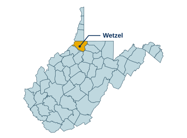

Web GIS · West Virginia GIS Technical Center
West Virginia Flood Resiliency Framework
I built the entire website, front end and back end, to turn flood-risk data from our data scientists into maps and reports that communities can use.
Explore WVFRF ↗01 Select a county

02 Read the indicator
1,571buildings in the high-risk flood zone
15.6% of all buildings in the county
03 Open the report
Wetzel County risk report ↗